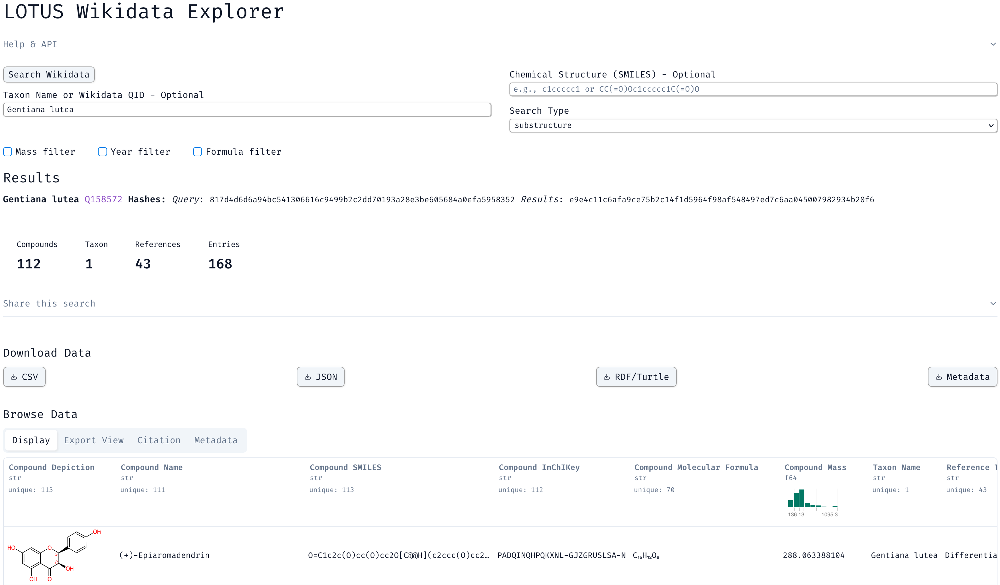

uvx \
--from \
git+https://github.com/adafede/marimo \
lotus_wikidata_explorer \
export \
--taxon "*" \ # to get all taxa, else "Gentianaceae", for example
--format csv \ # also supports json, ttl
--output 20260119_lotus.csv.gz \
--compress \
--verboseCultivating Knowledge Flow in Open Chemistry
Chemistry
LOTUS
Open Science
Wikidata
Five years ago, LOTUS (Rutz et al. 2022) started as a small attempt to cultivate the flow of chemical knowledge, in the same way we study how metabolites flow through living systems, rather than to build yet another database.
The idea was simple. Natural products data should be open, structured, reusable, and belong to everyone.
Like many community-driven efforts, LOTUS had bursts of activity, long pauses, and years of invisible maintenance. From the outside, silence can look like disappearance. From the inside, it usually means people are still doing the work; slowly, carefully, and often without announcements.
From isolated datasets to global outreach
The early focus of LOTUS was necessarily inward: assembling data, cleaning records, releasing versions. We built a website, curated entries, and archived releases.
But we slowly realized something uncomfortable: data stored in a repository, even a good one, does not automatically live.
Archiving on Zenodo (https://zenodo.org/communities/the-lotus-initiative) was the right thing to do, but archived data is mostly silent data. It waits to be discovered, and versioning remains labor-intensive.
What we really needed were entry points where people already were.
Wikipedia , Wikidata , and Scholia building on top of it are not dissemination platforms in the classical sense. They are circulatory systems. They persist because communities maintain them.
The Scholia Chemistry preprint (Willighagen et al. 2025) co-authored with Egon , Denise , Daniel , and Finn belongs to this continuity. It does not introduce a new platform. It offers a lens for communities to see what they already collectively know.
Making knowledge visible: the Wikipedia P703 module
Knowledge needs channels, not just reservoirs.
One important step was enabling Wikipedia articles and infoboxes to directly access found in taxon (P703) relationships from Wikidata in an efficient way.
This sounds like a small technical detail. It is not.
The idea had circulated quietly for years, in hallway conversations, chats, and conferences. I also mentioned it during the WikiCite 2025 conference last August, but it took time before conditions were right. Infrastructure work rarely happens on schedule. It almost never happens on stage. It happens in version histories, talk pages, and tiny edits that fix one Lua bug, enabling thousands of articles to improve forever.
Once data is in Wikidata, it can flow into thousands of chemical articles, in dozens of languages, without duplication or translation overhead. It becomes visible to non-experts, students, and readers who will never see a database interface. This is how open data becomes public knowledge.
These modules are now available on multiple Wikipedias:
If you speak another language, feel free to copy them and increase their use.
Initially, I tried to reuse existing modules, and quickly learned why module reuse across Wikipedias is famously difficult. Each wiki evolves its own ecosystem of dependencies, conventions, and technical debt. So the modules were written fully contained, independent of language-specific infrastructure. Only lines that need to be changed are the language-specific translations at the top of the module, trying to follow 18n.
These modules are not a new website or a new interface. They are simply better plumbing.

By default, only 5 organisms are shown, keeping the text clean and readable. But the magic is in how the module handles the rest: each taxon links to its Wikipedia article, and if no article exists in the current language, the module gracefully redirects to an equivalent page in another wiki. A beautiful example of this is war for Quassia africana.
Reaching non-experts
Not everyone wants to learn SPARQL.
I have heard this sentiment countless times. Regardless of personal preferences, if we want the data to truly live, it must reach as many people as possible.
Small tools like the LOTUS Wikidata Explorer help lower that barrier. It is imperfect. It is still growing. But it already allows chemists, curators, and students to access and export data in formats they can actually use.
The principle is simple: knowledge only flows when it reaches people. The data must be seen, explored, and reused. Only then does it fulfill its purpose.

On a more technical note, the LOTUS Wikidata Explorer leverages the powerful IDSM endpoint (Galgonek and Vondrášek 2021), which allows for chemical similarity searches thanks to Sachem (Kratochvíl, Vondrášek, and Galgonek 2018). Its speed for large-scale queries could never have been reached without QLever (Bast and Buchhold 2017), and chemical depictions come from CDK Depict.
It returns structured metadata for traceability and reproducibility, together with hashes that uniquely identify the query and its results. It can be queried programmatically via simple API calls, for example ?taxon=Gentianaceae or ?smiles=c1ccccc1&formula_filter=true&f_state=required. It works directly in the browser without requiring heavy dependencies, almost everything works out of the box.
Alternatively, users can take advantage of a local version, for example to extract a small, personal knowledge graph in TTL format, or to export all or selected LOTUS data in more chemistry-friendly formats such as JSON or CSV, ready for analysis, visualization, or integration into other workflows.
For example, to export a complete or filtered snapshot locally:
And if you are curious where halogenated compounds appear most often, you can simply ask:
xan dedup 20260119_lotus.csv.gz \
--select compound_inchikey,molecular_formula,taxon_name | \
xan select compound_inchikey,molecular_formula,taxon_name | \
xan filter "contains(molecular_formula, 'Br') or
contains(molecular_formula, 'Cl') or
contains(molecular_formula, 'F') or
contains(molecular_formula, 'I')" | \
xan filter '!contains(molecular_formula, "Fe")' | \
xan freq -s taxon_name | \
xan hist -l value -RHistogram for taxon_name (bars: 11, sum: 11,604, max: 10,060):
Streptomyces | 374 3.22%|■■■■ |
Laurencia dendroidea | 314 2.71%|■■■■ |
Laurencia obtusa | 184 1.59%|■■ |
Pseudoceratina purpurea | 112 0.97%|■■ |
Aplysia dactylomela | 99 0.85%|■■ |
Nostoc | 99 0.85%|■■ |
Laurencia nipponica | 95 0.82%|■ |
Portieria hornemannii | 94 0.81%|■ |
Lyngbya majuscula | 88 0.76%|■ |
Chaetomium globosum | 85 0.73%|■ |
<rest> |10,060 86.69%|■■■■■■■■■■■■■■■■■■■■■■■■■■■■■■■■■■■■■■■■■■■■■■■■■■■■■■■■■■■■■■■■■■■■■■■■■■■■■■■■■■■■■■■■■■■■■■■■■■■■■■■|Making flow reliable: curation and standards
At some point, flow only runs if it is maintained.
As I do not post as often as I probably should, here are some other pointers to related work and discussions from the past months, for those who want to follow the flow a bit further:
Blue Obelisk
- Following some ideas he had to improve Scholia Chemistry, Egon initiated the Blue Obelisk Wikidata Chemistry Curation project: https://blueobelisk.github.io/wikidata-chemistry-curation/. I then joined and contributed to some parts, maybe you will find out which ones!
- Contributions were also made to the Blue Obelisk IUPAC Names project (also led by Egon): https://github.com/BlueObelisk/iupac-names, integrating Wikidata-derived name-compound pairs. See https://github.com/Adafede/wd-labels-to-iupac and https://chem-bla-ics.linkedchemistry.info/2025/08/09/one-million-iupac-names-4.html (Willighagen 2025) These bridges allow names and identifiers to circulate consistently across systems.
Reactions flow
Recently, I also contributed to improving how chemical reactions are modeled in Wikidata.
Previously, many reactions were modeled as instances of “chemical reaction”, which violated disjointness, see (Doǧan and Patel-Schneider 2025).
The introduction of type of chemical reaction now allows reactions to be classified more precisely, while preserving their hierarchy using subclass of.
Wikifunctions
Out of curiosity, I also made a small contribution to chemistry-related functions in Wikifunctions: Z30950. It validates CAS Registry Numbers. It does one thing, and it does it reliably.
It is tiny. But it is a seed.
Looking forward: flowing knowledge, flowing metabolites
Projects like Wikifunctions and Abstract Wikipedia point to the next phase of open knowledge: knowledge that is not only stored, but executed, reused, and recombined.
A global, open metabolomics knowledge graph is slowly taking shape, one where chemical structures, organisms, reactions, and evidence can finally be traced together.
LOTUS is no longer an initiative. It is one contributor among many in that graph.
If you edit Wikipedia, curate Wikidata, maintain a SPARQL endpoint, write a template, review a module, or fix a tiny detail no one will notice, thank you. This work only matters because you are here.
References
Bast, Hannah, and Björn Buchhold. 2017. “QLever: A Query Engine for Efficient SPARQL+text Search.” In Proceedings of the 2017 ACM on Conference on Information and Knowledge Management, 647–56. CIKM ’17. ACM. https://doi.org/10.1145/3132847.3132921.
[cito:usesMethodIn]
Doǧan, Ege Atacan, and Peter F. Patel-Schneider. 2025. “Disjointness Violations in Wikidata.” In Knowledge Graphs and Semantic Web, 259–74. Springer Nature Switzerland. https://doi.org/10.1007/978-3-031-81221-7_18.
[cito:citesAsRecommendedReading]
Galgonek, Jakub, and Jiří Vondrášek. 2021. “IDSM ChemWebRDF: SPARQLing Small-Molecule Datasets.” Journal of Cheminformatics 13 (1). https://doi.org/10.1186/s13321-021-00515-1.
[cito:usesMethodIn]
Kratochvíl, Miroslav, Jiří Vondrášek, and Jakub Galgonek. 2018. “Sachem: A Chemical Cartridge for High-Performance Substructure Search.” Journal of Cheminformatics 10 (1). https://doi.org/10.1186/s13321-018-0282-y.
[cito:usesMethodIn]
Rutz, Adriano, Maria Sorokina, Jakub Galgonek, Daniel Mietchen, Egon Willighagen, Arnaud Gaudry, James G Graham, et al. 2022. “The LOTUS Initiative for Open Knowledge Management in Natural Products Research.” eLife 11 (May). https://doi.org/10.7554/elife.70780.
[cito:cites]
Willighagen, Egon. 2025, August. https://doi.org/10.59350/krw9n-dv417.
[cito:citesAsRecommendedReading]
Willighagen, Egon, Denise Slenter, Adriano Rutz, Daniel Mietchen, and Finn Nielsen. 2025. “Scholia Chemistry: Access to Chemistry in Wikidata,” May. https://doi.org/10.26434/chemrxiv-2025-53n0w.
[cito:cites]
Reuse
Citation
BibTeX citation:
@online{rutz2026,
author = {{Adriano Rutz}},
title = {Cultivating {Knowledge} {Flow} in {Open} {Chemistry}},
date = {2026-01-20},
url = {https://adafede.github.io/posts/2026-01-20_chem_flow.html},
doi = {10.59350/sk00y-3gh44},
langid = {en}
}
For attribution, please cite this work as:
Adriano Rutz. 2026. “Cultivating Knowledge Flow in Open
Chemistry.” January 20, 2026. https://doi.org/10.59350/sk00y-3gh44.